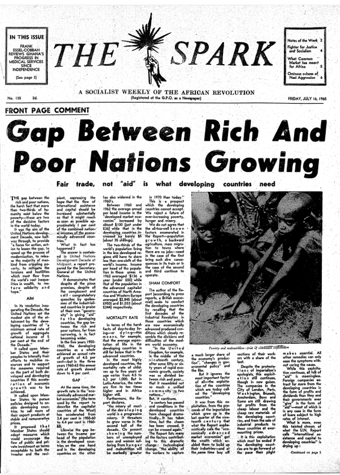
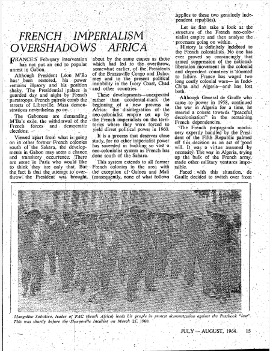
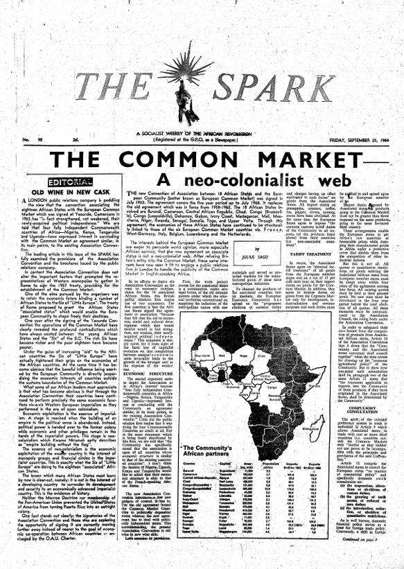
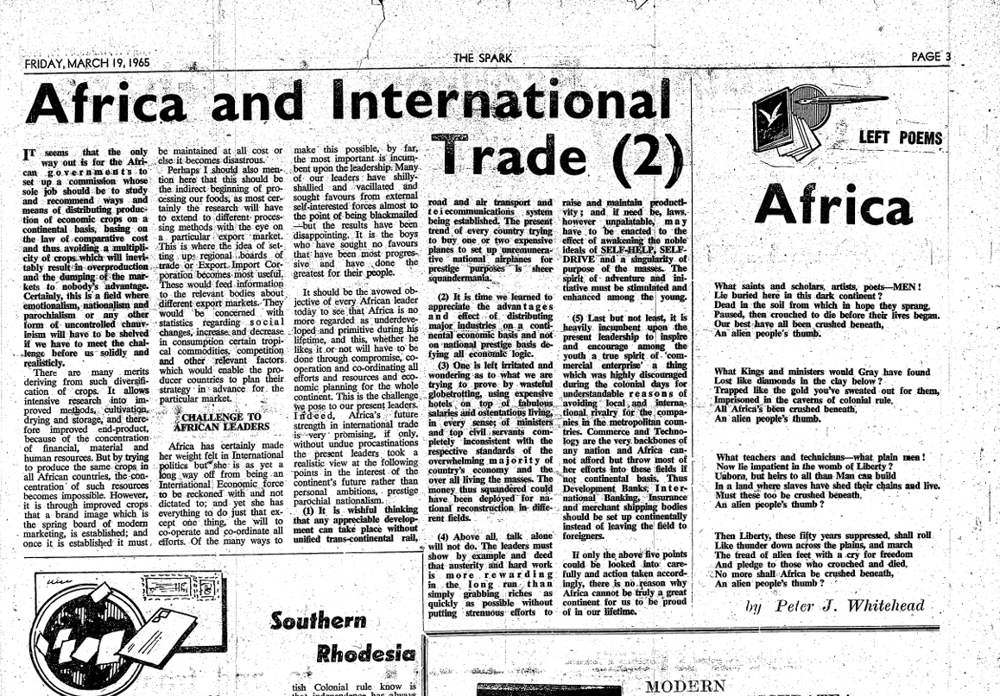
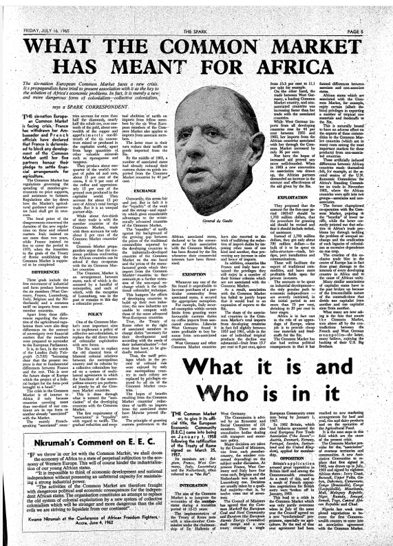

Le néocolonialisme économique
l'investissement de la France
Le domaine économique est probablement l’un des meilleurs exemples quant au principe de « reconduction » des pratiques de la période coloniale afin de mettre en œuvre le néocolonialisme. D’autant plus, il est intéressant de noter que dans ce type de néocolonialisme, la ligne entre l’intérêt national, et celui des banquiers et privées, sont entremêlés. Georges Pompidou, Président de la République de 1969 à 1974, représente bien cet entrelacement d’intérêts où prospère le néocolonialisme français.
effet, dès 1953, Pompidou entre dans les cercles financiers comme directeur général de la banque Rothschild. Rapidement, il saisit le fonctionnement des circuits capitalistes coloniaux et l’importance de la gestion des sociétés privées en Afrique. Lorsque Pompidou accède au pouvoir, la France gagne un président proche des finances internationales, mais aussi un politicien bien au fait de l’importance de la politique de coopération en tant que cadre financier pour la création d’un environnement profitable aux intérêts français notamment en Afrique de l’Ouest. Lors d’un voyage à Libreville en 1971, Pompidou, mentionne que « le tournant est pris. La Coopération est un fait durable et, croyez-moi, elle durera ». Cela donne le ton sur les actions à venir de la France pour implanter sa politique économique néocoloniale.
La difficile transition économique de la période coloniale à l'ère postcoloniale
Subordination. La coopération pour subordonner les États africains
Nous avons mentionné le terme « subordination » dans la section précédente. En effet, la subordination et la prédisposition des États africains sont deux concepts intimement reliés dans la stratégie politique française. Par conséquent, la subordination des États africains représente la seconde manifestation du néocolonialisme économique français. Principalement grâce aux accords de coopération, les nouveaux États-nations africains sont mis en état de dépendance envers l’ex-métropole. Nous analysons quelques articles clefs des accords de coopération dans la section qui suit afin de voir le caractère néocolonial de la subordination économique ainsi que les conceptions de Touré et Nkrumah sur le sujet.
Rappelons à nouveau que les colonies devaient obligatoirement accepter les accords de coopération afin d’accéder à la souveraineté. La France, qui fait de la coopération une condition sine qua non, dévoile par le fait même sa volonté de ne pas bouleverser le pacte colonial et bien au contraire, en assurer la continuité. D’entrée de jeu, le premier article dans les Accord particulier portant sur le transfert des compétences de la Communauté mentionne une association contractuelle entre les États indépendants et la zone franc, où les États membres acceptent de coordonner leurs « politiques commerciales financières externes » avec l’Élysée. Cet article représente bien la tactique derrière la politique néocoloniale de subordination des États africains auprès de la ligne économique imposée par la France. Bien que les termes « État indépendant » suivis de « détient l’intégralité des pouvoirs » sont utilisés, il n’en demeure pas moins que tout doit être coordonné avec la France. Cela nous ramène à l’idée de subordination. Nkrumah explicite en détail la subordination, en rappelant le rapport entre la métropole et l’ex-colonie :
Ainsi, bien qu’indépendants de nom, ces pays continuent à vivre dans la relation classique de la colonie par rapport son « patron » métropolitain, autrement dit à produire des matières premières et à lui servir de marchés exclusifs. La seule différence est que, maintenant, cette relation est couverte par un semblant d’aide et de sollicitude, l’une des formes les plus subtiles du néocolonialisme.Kwame Nkrumah, l'Afrique doit s'unir, 1963, p. 205.
Pour bien saisir l’analyse de Nkrumah, il importe de faire un retour dans la période coloniale. Le système de l'exclusivité, implanté durant la période coloniale, fait office de modèle pour les rapports métropoles/colonies. Les colonies sont réduites à un rôle de fournisseur de matières premières, et ne peuvent que commercer avec la métropole qui impose un lien économique exclusif. Il y a donc, dans la conception de Nkrumah, une continuité dans l’histoire de l’exploitation.
Le Ghanéen évoque cette idée comme quoi l’État-nation se trouve dans une position inférieure en raison de la logique néocoloniale du marché exclusif. Il rappelle que l’aide renforce l’exclusivité de la France qui, à son tour, renforce les intérêts économiques de la métropole. L’article 16 des accords de coopération illustre bien la conception de Kwame Nkrumah. Il est question des transactions monétaires entre pays membres de la zone franc et d’un pays extérieur. Les pays membres, puisqu’ils opèrent avec le franc CFA, doivent acheter des devises étrangères sur le marché des changes de la Zone franc pour effectuer ses transactions internationales. Nous comprenons, à travers ceci, que l’Élysée maintien son pouvoir sur les économies des États africains en les forçant 1. à devoir utiliser le franc CFA puis 2. à convertir le franc CFA (toujours à des taux désavantageux) dans d’autres monnaies.
Pour Kwame Nkrumah, il ne fait aucun doute que le néocolonialisme économique français cherche à protéger la relation classique colonie-métropole dans les échanges commerciaux. Toutefois, ces désirs sont camouflés dans la coopération sous « un semblant d’aide et de sollicitude, l’une des formes les plus subtiles du néo-colonialisme ». Après l’indépendance, le duo ajoute que la France voit les ex-colonies comme des territoires propices au profit, où l'objectif demeure la fructification de l'investissement dans les ex-colonies.
Cependant, il est important de rappeler que le néocolonialisme n’opère pas seul et nécessite la participation de l’élite politique au pouvoir des pays africains pour assurer son fonctionnement. Si Nkrumah ne se prononce pas sur ce fait, Sékou Touré, quant à lui, cible directement la « classe bourgeoise en Afrique ». Touré souligne comment les pays africains sont tombés dans le piège du néocolonialisme économique, notamment par l’attrait de l’enrichissement personnel pour les acteurs politiques africains :
Le pays devient un paradis du système capitaliste mondial qui cite en exemple la bourgeoisie locale comme avisée, et réaliste ; réaliste sans doute parce que soumise à la réalité du capitalisme dominant ; c’est du servilisme.Sékou Touré, Pour une économie populaire, 1974, p.34.
La bourgeoisie locale africaine ayant été séduite par l’Élysée, elle devient « servile » aux dires de Touré, ce que nous nous qualifions de la politique de subordination. Toujours dans cette même logique, l’accord 17 du même document discute de la nomination des directeurs à l’intérieur de la zone franc. Or, bien que le texte reconnaisse le droit aux États africains de « nommer » un directeur, son investiture doit être préalablement acceptée par la France. Ceci témoigne de deux choses : d’abord la manière dont l’Élysée maintient une élite en place favorable à ses projets et ensuite comment la politique de subordination des États africains se déploie, en ajoutant des « droits » supplémentaires à l’Élysée octroyant un véto sur les décisions africaines. Comme l’économiste Demba Moussa Dembélé souligne, la zone franc est un mécanisme primordial pour la mise ne tutelle des politiques économiques africaines.
Le déploiement de la politique néocoloniale économique de la subordination des États africains démontre l’objectif de la France de prolonger la situation coloniale, de manière légale grâce aux accords de coopération. Pour Touré, tout comme Nkrumah, la coopération est la clé de voute du néocolonialisme :
La dangereuse mystification qui entoure le concept de développement s’est également emparée de celui de coopération. Il n’y a pas coopération véritable et durable qu’à la condition expresse que les parties intéressées jouissent pleinement de leur liberté d’action et agissent sur la base de l’égalité absolue. […] Or l’impérialisme fait du concept de coopération un autre cheval de bataille pour la reconquête de nouvelles positions au détriment des Peuples abusés.Sékou Touré, Pour une économie populaire, 1974, p.38.
Notons que Touré ne voit pas négativement l’idée d’une coopération : au contraire, il spécifie qu’une coopération « véritable et durable » peut exister, si celle-ci respecte la liberté d’action des États participants. Or, en sous la politique néocoloniale de subordination, la liberté d’action est neutralisée. À nouveau, il s’agit d’un objectif avoué à huis clos par le ministère de la Coopération. Selon le ministère, c’est par l’entremise de la nouvelle politique de coopération que la République française peut continuer à jouir d’un espace d’influence privilégié.
Des avantages ou de l'entraide? Le néocolonialisme économique dissimulé
Assistance. Le néocolonialisme dissimulé dans « l’aide »
Allant de pair avec la zone franc, l’Élysée met également en œuvre sa politique de coopération « d’assistance » auprès des nouveaux États-nations. Bien que le concept d’assistance se veut bienveillant, dans une logique néocoloniale, l’assistance économique sert davantage à resserrer les liens de nature inégaux entre les économies africaines et françaises.
Sans contredit, la discussion autour de la nature néocoloniale (ou non) de l’aide économique offerte par la France aux nouveaux États-nations ne laisse pas les historiens, économistes et politologues indifférents. En ce sens, l’économiste Julius Gatune avance que, malgré les critiques contre l’assistance économique, les difficultés de développement auraient été possiblement pires sans celle-ci. Toujours dans la nuance, l’historien Godfrey Uzoigwe critique davantage le système d’assistance, dans lequel une puissance économique doit aider un État plus faible économiquement, car cela est voué à une relation inégale.
Si Gatune tombe dans le piège révisionniste en créant des alternatives historiques ne s’étant jamais réalisées (comment pouvons-nous savoir si le développement aurait été dans une pire situation?), Uzoigwe évite la question de la responsabilité africaine dans la relation néocoloniale où ces derniers facilitent l’accueil de cette relation inégale. D’ailleurs cela est au cœur de la conception de Touré, qui reproche aux dirigeants africains de se tourner vers l’aide étrangère comme solution rapide à leurs problèmes dès que des perturbations économiques surviennent. Sans indexer les autres dirigeants africains, Kwame Nkrumah mentionne que l’aide économique constitue la « pire chose » pour un pays en développement, puisqu’il retrouve foncièrement liés aux contraintes des conditions sur les prêts :
L’une des pires choses qui puissent arriver à un pays sous-développé et tentant de s’en sortir, c’est de recevoir une aide étrangère impliquant des obligations économiques et politiques qui le ligotent; très souvent, ces « aides » sont enrobées de conditions financières difficiles à déceler. L’investissement fait par une compagnie étrangère dans un pays jeune et en plein développement, dans une intention lucrative, n’a rien à voir avec l’aide […] C’est pourquoi nous sommes extrêmement vigilants dans le dépistage des infiltrations insidieuses du néo-colonialisme et du sabotage des étrangers qui bénéficient de notre hospitalité et ont le privilège de fonder des entreprises sur notre territoire.Kwame Nkrumah, L'Afrique doit s'unir, 1963, p.127.
Nkrumah voit cette assistance comme un piège, tandis que Touré la voit comme une « arme », particulièrement dans la dimension de l’assistance technique :
En prétendant nous aider à combler notre retard dans le domaine technique, l’impérialisme fixe un prix encore plus exorbitant; il transforme tout simplement sa prétendue « assistance technique » en une arme de subversion, de corruption, aux fins de domination néocoloniale.Sékou Touré, Pour une économie populaire, 1974, p.39.
Dans un autre ordre d’idée, comme nous avons expliqué dans la section précédente sur le fonctionnement du franc CFA et de la zone franc, l’aide au développement soutient les intérêts économiques français, notamment grâce aux taux d’intérêt élevés pour le remboursement en franc français. Si nous prenons l’exemple du Sénégal, il convient de mentionner que la France y envoie, en « aide », près de 12 milliards de franc CFA entre 1960 et 1970. Toutefois, l’Élysée retire par la suite 25 milliards de profit provenant de cette aide. Grâce aux mécanismes de convertibilité dans la zone franc et de la fixité de la parité, le Sénégal doit rembourser les 12 milliards franc CFA en franc français. Conséquemment, le taux de change est voué à meurtrir l’économie sénégalaise. À titre, indicatif, en 1977, sur chaque dollar accordé par la France, le Sénégal doit rembourser 121$. Ainsi, l’assistance, par l’entremise de la Zone franc et du franc CFA, accélère le statut de pauvreté. En liant le franc CFA avec la Zone franc et le franc français, le principe de « pouvoir libératoire » est totalement désavoué, car le franc CFA est asservi aux taux de change.
Des avantages ou de l'entraide? Le néocolonialisme économique dissimulé
Marginalisation. Un systèm inégalitaire imposé
L’Élysée prend soin de protéger sa relation unique avec ses ex-colonies même au niveau international. Par exemple, le traité de Rome (1957) mène à la création de la Communauté Économique Européenne (CEE), qui comprend également la reconnaissance de l’exclusivité que la France possède sur les territoires africains lui appartenant. Ce droit acquis en période coloniale demeure même après les indépendances, ce qui ne tient pas du hasard : il s’agit de la dernière manifestation du néocolonialisme économique de la France.
En dernier lieu, nous analysons la manifestation du système inégalitaire obligatoirement imposée sur la scène internationale aux nouveaux États-nations qui mène à la marginalisation des États africains. Pour ce faire, nous verrons deux points importants : le multilatéralisme et le système inégal. Selon Sékou Touré, le problème avec l’intégration des États-nations sur la scène économique internationale débute dès la décolonisation, dans la difficulté à se tailler un rôle significatif dans les échanges :
Mais depuis l’indépendance des jeunes États d’Asie, d’Afrique, les théoriciens de la coopération sont devenus si nombreux et si déroutants que le plus souvent ces États finissent, par manque d’expérience de la vie internationale, par se subordonner à leurs pires ennemis. Le colonialisme ancien, revêtu d’un nouveau manteau et usant partout de paternalisme et de promesses, s’évertue à se reconvertir en néo-colonialisme en vue de continuer à exploiter et à duper nos Peuples ».Sékou Touré, Pour une économie populaire, 1974, p.75.
Touré croit que le néocolonialisme économique a accéléré la marginalisation des États africains dans le système mondial. Les « théoriciens de la coopération » sont, en fait, les spécialistes envoyés par divers organismes ayant pour objectif d’assister au développement économique des États en difficulté de développement. Toutefois, selon le Guinéen, ces thuriféraires de la politique de coopération sont davantage présents dans un but néocolonial de marginaliser le rôle des économies africaines sur le plan international.Au tournant de la décolonisation, l’Afrique se retrouve bel et bien en marge de l’économie mondiale. Cette situation s’explique notamment par le contexte international du XXe siècle, où l’heure est à la configuration de la communauté internationale, avec la création de l’ONU, des institutions de Bretton Woods, du FMI et de la Banque mondiale.
Il devient difficile pour les jeunes États-nations de se tailler un rôle et de faire respecter leurs volontés, particulièrement pour des États comme la Guinée et le Ghana où l’objectif est le socialisme et le panafricanisme, deux principes évoluant en dichotomie des objectifs libéraux de l’ONU, Bretton Woods et du FMI. Nul ne doute que Sékou Touré est sous l’influence du contexte des difficultés économiques lorsqu’il postule ses conceptions. C’est ce qui explique pourquoi il s’en prend au rôle des multinationales, qui contribuent, selon Touré, à la marginalisation des États africains :
[…] Et c’est à travers cette interdépendance que les multinationales déclenchent de graves situations économiques, chaque fois qu’il est dans leur intérêt de modifier la situation intérieure d’un pays […] Elles s’emploient, grâce à leur poids économique, à rendre le système économique du pays victime insoutenable pour les citoyens. Voilà le fer de lance de l’impérialisme qui est la multinationale dont il oriente toute la politique.Sékou Touré, Des États-Unis d'Afrique, 1980, p.172.
Les États africains sont marginalisés, cantonnés au rôle de pays du « Tiers monde », victime de la fixation des prix sur les matières premières par la France et les autres puissances capitalistes. Les États-nations doivent par la suite exploiter leurs propres ressources, mais pour le profit des puissances étrangères comme le dicte le marché mondial. À ce sujet, Nkrumah se démarque de Touré dans sa conception, en soulignant que la France parvient à dissimuler son néocolonialisme dans le marché mondial :
En fait, le néo-colonialisme limité de la période française se fond actuellement dans le néo-colonialisme collectif du Marché commun qui permet à d’autres nations, ne faisant jusqu’alors pas partie de la chasse gardée de la France, de profiter de ce système. Il rationalise la division de l’Afrique en zones économiques basées sur l’Europe.Sékou Touré, Des États-Unis d'Afrique, p.172, 1980 
La France protège son modèle d’influence et permet aux autres pays capitalistes de profiter des possibilités d’exploitation en Afrique. Bien que les États africains occupent une place modeste dans les échanges commerciaux de la France, l’Élysée possède tout de même près de 20% du marché avec les nouveaux États-nations, la plus grande part du marché des pays industrialisés. En considérant tous les avantages pour la France de faire des échanges avec les pays africains, ces derniers enregistrent des déficits commerciaux de façon chronique auprès de la France. En autre mot : les ventes ne couvrent jamais les achats. Comme Patrick Dramé souligne, ces échanges sortent du cadre classique du rapport entre deux États souverains. Grâce à cette stratégie néocoloniale, l’influence et le contrôle exercé par la France croissent.
Conclusion
Au tournant de la décolonisation, les États africains se sont retrouvés dans une position difficile. Voilà pourquoi la première et seconde manifestation du néocolonialisme économique est liée avec ce contexte, où la France exploite l’état de prédisposition des nouveaux États-nations pour les subordonner à ses intérêts et son néocolonialisme. L’exclusivité, qui se manifeste dans le franc CFA et la zone franc, ainsi que l’assistance représente les troisième et quatrième manifestations importantes du néocolonialisme économique, qui dissimule son profit sous l’égide de « l’entraide ». En prenant une perspective plus globale, nous voyons finalement les cinquième et sixième manifestations : l’arrivée de la géoéconomie contraint les États-nations dans le marché mondial capitaliste voué à son exploitation. La marginalisation de ces États-nations est à la fois orchestrée par le néocolonialisme français tout en étant une conséquence du système international inégalitaire.